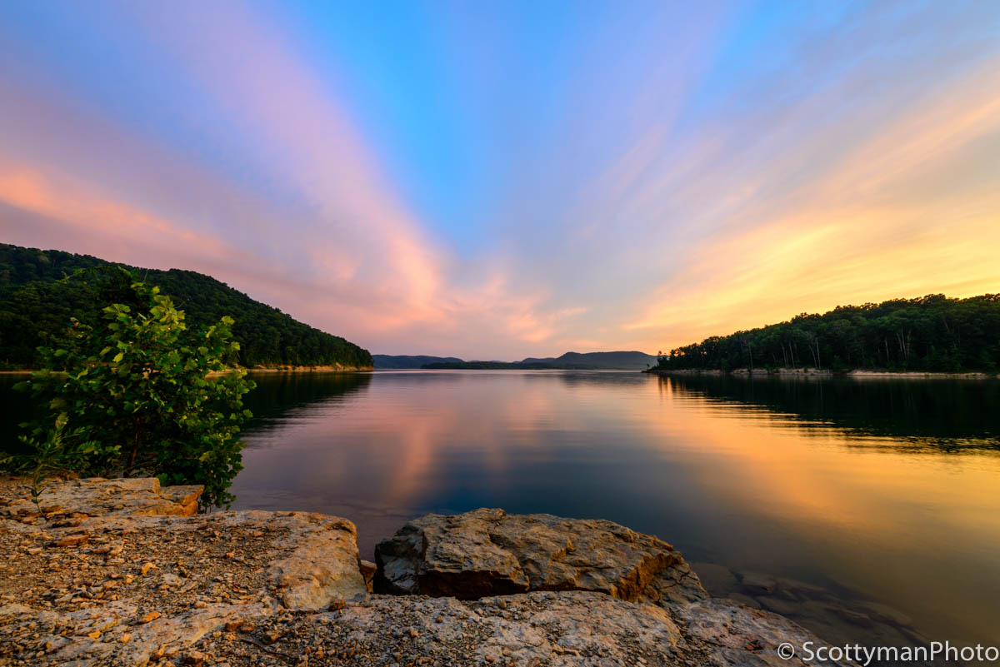
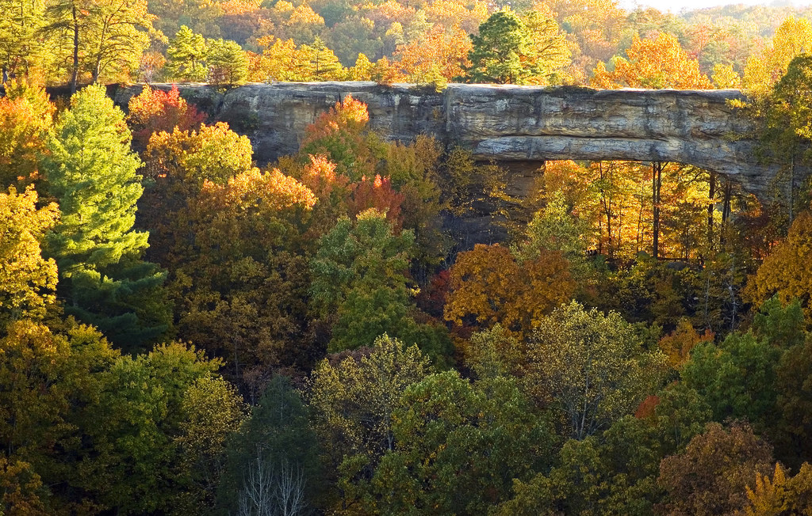
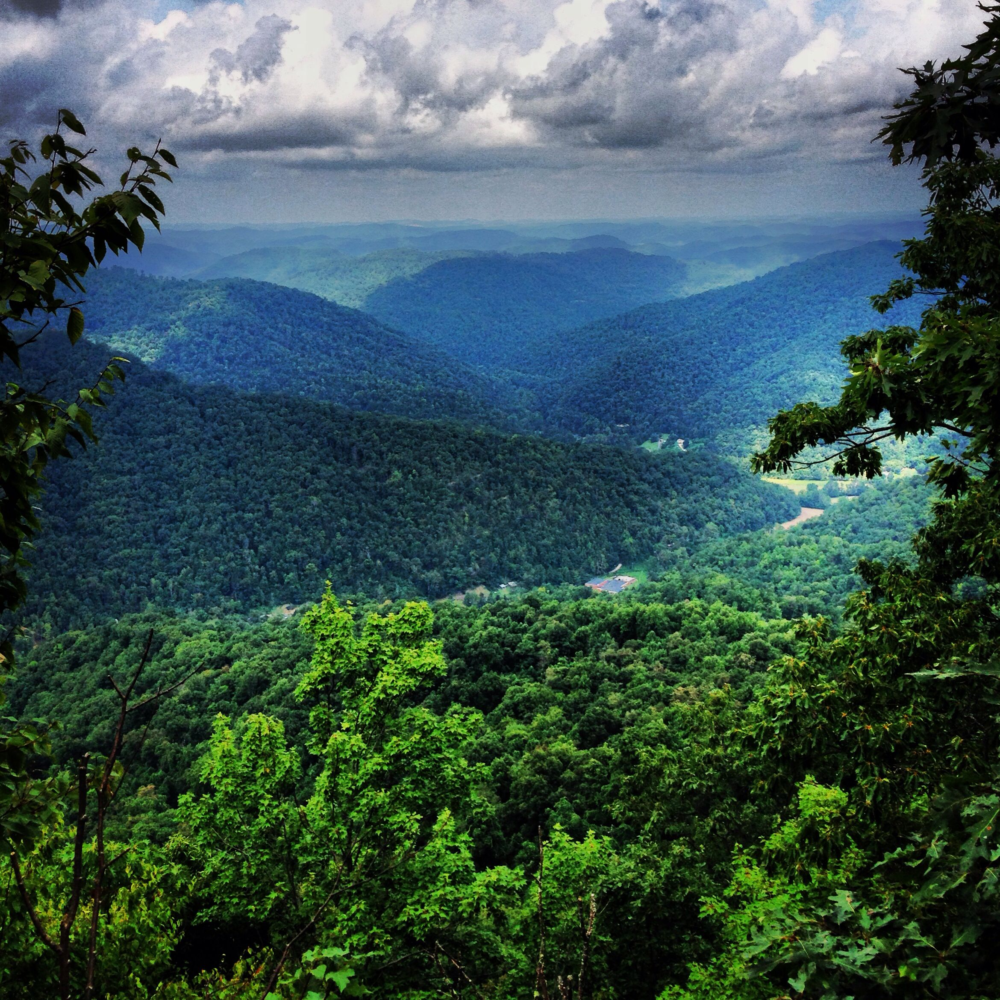
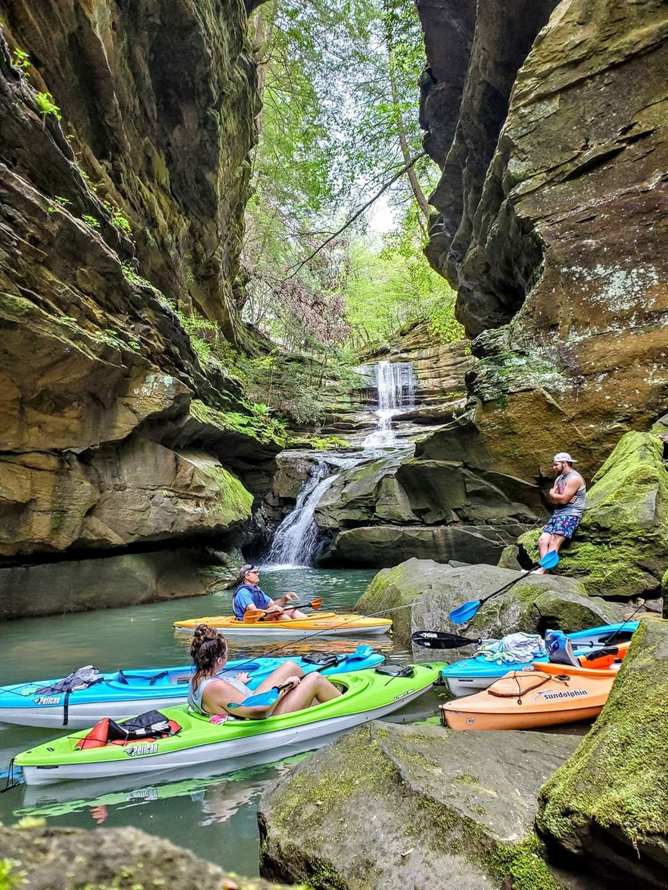

Things to Do in Eastern Kentucky
Hiking, lakes, natural bridges, and more — adventure starts here.
Eastern Kentucky has plenty to offer the outdoor adventurer! Great hiking, fishing, camping, canoeing, kayaking, and more await visitors to our area.

-
Explore Red River Gorge and Natural Bridge State Park

Natural Bridge in fall — a breathtaking view in every season -
Hike the Appalachian Mountains

A breathtaking view from the Appalachian Mountain trails -
Visit local lakes and rivers for boating, fishing, kayaking, and canoeing

Kayaking through hidden coves and waterfalls in Eastern Kentucky